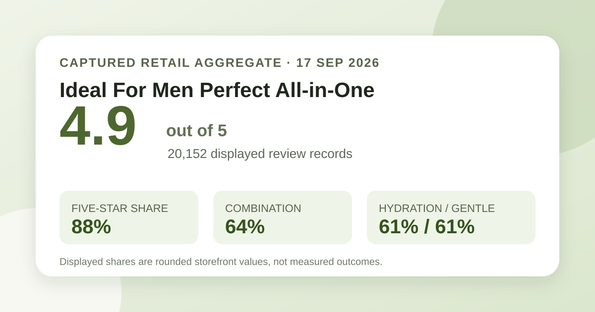
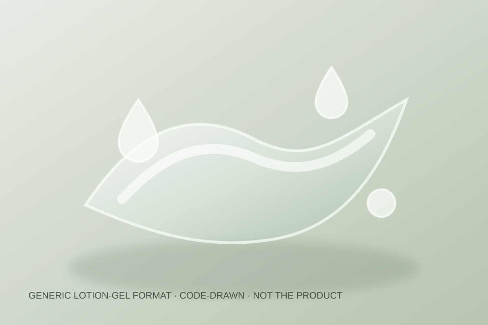

Aggregate data captured September 17, 2026. This article uses only the product title, offer, rating, rating distribution, displayed survey shares, and anonymous aggregate themes shown on Olive Young Korea. It does not reproduce or translate an individual review, reviewer name, or user photo.

The short version: the listing averaged 4.9 stars across 20,152 review records. Five-star ratings accounted for 88% of the displayed distribution. Combination skin was the largest skin-type response at 64%, hydration was the leading concern response at 61%, and 61% selected the gentle response.
The average displayed rating was 4.9 out of 5. The detailed distribution showed 88% five-star, 10% four-star, 2% three-star, 0% two-star, and 0% one-star. The displayed shares total 100%, but they remain rounded storefront values. They should not be converted into exact star-bucket counts because the page did not expose the underlying record count for each bucket.
A review base above twenty thousand is less sensitive to one unusual score than a tiny sample, and the distribution is visibly concentrated near the top. That is useful sentiment context. It is still not a controlled trial, independently verified unique-buyer count, repurchase rate, or prediction for a new user. Linked reviews can also span configurations or packaging that the retailer treats as materially related.
The captured skin-type poll displayed 64% combination, 27% dry, and 9% oily. These rounded shares total 100%. Combination respondents clearly formed the largest group in this feedback pool, with dry respondents second and oily respondents a smaller share.
Representation is not suitability. The 64% figure does not mean the product worked for 64% of combination-skin users. It does not compare the all-in-one against a separate toner, serum, and moisturizer routine. The page did not display a separate denominator for the poll, and factors such as climate, shaving habits, amount, frequency, other products, sensitivity, and the reason someone chose a label were not controlled.
The separate concern poll showed 61% hydration, 33% soothing, and 6% wrinkle or brightening. Hydration led the available categories. That describes which concern label was most represented among the displayed responses; it does not show that 61% measured a moisture increase or that the product caused one.
The 33% soothing response is also not evidence that the formula treats shaving irritation, acne, redness, eczema, or another condition. The 6% wrinkle or brightening response is not a clinical result. No instrument reading, standardized before-and-after image, control group, treatment protocol, or independent medical assessment was part of this retailer aggregate.
The irritation poll displayed 61% gentle, 38% ordinary, and 1% felt irritation. Gentle was the leading response, but it was not as dominant as the combination-skin share. A majority label cannot guarantee tolerance, especially when the separate poll denominator and participant selection method are not shown.
This is not an adverse-event rate, allergy test, dermatologist assessment, or safety certificate. Individual responses can differ with barrier condition, shaving, fragrance sensitivity, current actives, prescriptions, application amount, and regional formula. If a known allergy, diagnosed condition, prescription routine, or prior serious reaction is relevant, the current ingredient list and qualified guidance matter more than the aggregate label.
The page's automated aggregate summary classified 96% of recent feedback as positive and grouped discussion under convenience of use, a fresh-feeling finish, and a mild-feeling formula. Those themes are useful as navigation labels, not as verified claims. The summary does not expose a stable denominator here, preserve every reviewer's meaning, or establish that a description applies to every batch, skin type, climate, or amount.
Accordingly, this article does not reproduce or translate the underlying review sentences. “Convenient” remains a perception rather than proof that one step replaces every routine need. “Fresh” does not define exact viscosity, tack, alcohol content, or shine. “Mild-feeling” is not the same as hypoallergenic, fragrance-free, or medically suitable.

Only a category-level description is responsible here. An all-in-one facial product is generally designed to combine several leave-on routine roles in one step and may use a lotion, gel, or emulsion format. That broad category does not confirm this product's exact viscosity, spread, slip, cooling feel, scent, absorption speed, residue, pilling, or finish. I did not open, apply, smell, spread, shave with, or wear it.
The local visual is deliberately brand-neutral and code-drawn. It illustrates a generic translucent lotion-gel ribbon without copying the retailer's packaging, product photographs, collaboration art, or shopper images. The marketing name does not establish any ingredient concentration, and the “for men” positioning does not by itself prove a biological restriction or a special effect.
At capture, the Korean page displayed a ₩28,000 reference price and prices starting at ₩19,800. The title described a 150 ml single item or promotional configuration. Because the page presented selectable options, the lowest displayed price should not be assumed to apply to every bundle or stock state.
Price, promotion, gift, collaboration packaging, stock, taxes, shipping, seller, and regional configuration can change. The captured amounts are dated Korean-market context, not a live quote or savings guarantee. Compare the final checkout total, usable volume, exact option, current shelf-life information, and return terms. A character-themed gift has no bearing on the review aggregate or formula fit.
This capture did not preserve a complete current ingredient list or verified directions. It therefore does not support an estimate of active concentration, fragrance status, alcohol status, comedogenicity, shaving compatibility, pregnancy suitability, or regional formula equivalence. Neither a 4.9 average nor the poll labels can fill those gaps.
Combination skin was the largest displayed response at 64%. That makes combination-skin respondents well represented in the captured poll, but it does not prove the product performs better for them or that it will balance any particular person's routine.
No. Hydration was the concern label selected most often. It was not an objective measurement of water content, barrier function, duration, or improvement caused by the product.
The gentle response led at 61%, while 38% selected ordinary and 1% selected felt irritation. The aggregate did not isolate post-shave use, so it cannot predict tolerance on freshly shaved or compromised skin.
The all-in-one format and convenience theme suggest that simplification is part of the product's positioning. The captured data did not test whether it replaces every step for every skin type, season, climate, or treatment routine. Judge it against the specific jobs your current routine needs to perform.
The brand and listing market it as men's skincare, but this dataset does not establish a biological rule about who can use it. Any user should check the current formula, scent, directions, finish, and personal constraints rather than treating the marketing category as evidence of fit.
Ideal For Men Perfect All-in-One had a strong captured storefront profile: 4.9 stars from 20,152 linked review records, with 88% of the displayed distribution at five stars. Combination respondents dominated the skin-type poll, hydration led the concern poll, and gentle was the leading irritation response. The current ranking placed it first in skincare at the time of capture.
That is enough to make it a credible comparison candidate for someone considering a simplified all-in-one step. It is not enough to promise hydration, soothing, post-shave comfort, routine replacement, or individual tolerance. Use the aggregate alongside the current ingredient list, verified directions, exact option, final price, and your own constraints.
Source: Olive Young Korea product page, captured September 17, 2026. Product title, price, option, rating, rating distribution, survey shares, and automated aggregate themes can change.
← Back to all analyses · Review-volume ranking · Skin-type poll view